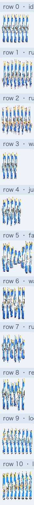

Internals
Kimi Work 桌面宠物机制调研
调研日期：2026-09-15 · 平台：macOS · Kimi Work 桌面端。源稿见仓库 how-kimi-work-pet-works.md。
1. 桌宠的存储位置
~/Library/Application Support/kimi-desktop/daimon-share/daimon/agents/main/blueprint/
├── pet/
│ ├── current.json # 当前选中的桌宠 + 已安装列表
│ ├── default-kimi-v3.json # 版本标记 {"version": 3}
│ └── library/
│ ├── kimi/ # 默认桌宠(Rive 动画)
│ │ ├── pet.json
│ │ └── pet.riv
│ └── <pet-id>/ # 其他已安装桌宠
└── widgets/widget_<id>/ # 桌宠实际渲染组件(kind: "pet")
├── widget.json
└── workspace/
├── index.html # 渲染器页面(自带 rive wasm)
├── pet.json # 渲染器实际读取的 manifest
└── spritesheet.webp / pet.rivcurrent.json 的 installed[].widgetId 指向桌宠组件；渲染器加载时请求 /workspace/pet.json，据此决定渲染方式。
1.1 多宠物切换机制（2026-09 起的新版应用）
pet/library/<pet-id>/是素材库：install.py 安装时会把清单与精灵图拷入，「设置 → 桌面宠物 → 选择桌面宠物」的列表 =current.json的installed[]与素材库经 manifest 校验后的并集（校验失败的条目会被过滤，不显示）。- 对素材库里的宠物点「切换」：应用会为它创建专属 widget 组件，把当前渲染器
index.html复制进新组件的workspace/（已注入的交互补丁随之携带），写入installed[]并设为selectedPetId，桌面窗口重新挂载到新组件。 - 对已在
installed[]里的宠物点「切换」：仅改selectedPetId并重新挂载，不再复制文件。 - 每只宠物一个组件，因此不同宠物的渲染器补丁互不影响；应用升级可能把组件渲染器重置为官方版本，补丁丢失时重跑 install.py 即可。
- 自 2026-09-18 的应用版本起，官方渲染器已内置唤醒补帧钳制与 canvas 精灵渲染，对应两个仓库补丁在新版本上无需再注入（脚本会检测并跳过）。
2. Manifest 格式（pet.json）
两种渲染器，由 renderer 字段区分（缺省走精灵图分支）。
Rive 动画（默认 Kimi 形象）
{
"schemaVersion": 1,
"id": "kimi",
"name": "Kimi",
"renderer": "rive",
"rive": { "file": "pet.riv", "stateMachine": "KimiAvator_homepage" },
"theme": { "bubble": { "background": "#445F7E", "foreground": "#FFFFFF", "border": "#6D829A" } }
}校验逻辑：若 renderer === "rive"，强制要求 rive.file === "pet.riv"。状态机 KimiAvator_homepage 的输入包括 click_avator、change_color 以及眼动方向（upper_left 等，跟随鼠标）。
精灵图（与 Codex 社区宠物格式兼容）
v1 使用 9 行 × 8 列；v2 使用 11 行 × 8 列，新增两行 16 方向视线帧（以下为 v2 迪莫）：

{
"schemaVersion": 1,
"id": "dimo",
"name": "Dimo",
"spritesheet": "spritesheet.webp",
"spriteVersionNumber": 2,
"atlas": { "frameWidth": 192, "frameHeight": 208, "columns": 8, "rows": 11 },
"states": {
"idle": { "row": 0, "frames": 6, "fps": 4, "loop": true },
"working": { "row": 7, "frames": 6, "fps": 8, "loop": true },
"waiting": { "row": 6, "frames": 6, "fps": 5, "loop": true },
"running_left": { "row": 2, "frames": 8, "fps": 10, "loop": true },
"running_right": { "row": 1, "frames": 8, "fps": 10, "loop": true },
"dragLeft": { "row": 2, "frames": 8, "fps": 10, "loop": true },
"dragRight": { "row": 1, "frames": 8, "fps": 10, "loop": true },
"failed": { "row": 5, "frames": 8, "fps": 6, "loop": true },
"idle_random_1": { "row": 3, "frames": 4, "fps": 3, "loop": true },
"idle_random_2": { "row": 4, "frames": 5, "fps": 6, "loop": true }
},
"lookDirections": {
"zeroDirection": "up", "clockwise": true, "deadZoneRatio": 0.15,
"frames": [
{ "angle": 0, "row": 9, "column": 0 },
{ "angle": 22.5, "row": 9, "column": 1 }
// ...到 { "angle": 337.5, "row": 10, "column": 7 }
]
}
}校验逻辑：atlas、states、states.idle 必须存在。render() 用 background-position 取帧：x = -frame*frameWidth，y = -state.row*frameHeight；loop: false 时播完停在最后一帧并回到首选状态。
新版应用（2026-09 起）在设置页读取桌宠时还会强制校验：states.dragLeft / states.dragRight 必填（通常与 running_left / running_right 共用行），且 provenance.provider 只能是 image_generation / pixellab / manual / other——不满足时设置页显示「读取桌面宠物状态失败」，桌宠无法启用。
宿主状态映射（resolveStateName）：
| 宿主事件 | 精灵图状态 | 缺省回退 |
|---|---|---|
| 会话运行 | working | idle |
| 等待确认 | waiting | idle |
| 拖动向左 | running_left | dragLeft → idle |
| 拖动向右 | running_right | dragRight → idle |
| 空闲随机动作 | idle_random_1/2 | 无（不触发） |
| 失败 | failed | idle |
idle_random_1/2 仅在空闲时随机延迟触发，让宠物「自己找事做」（招手、雀跃）。v2 的 lookDirections 只在空闲且没有互动动作时生效；任务状态、拖动与彩蛋动作始终优先。
3. 换形象的最小步骤
- 把素材放进
pet/library/<id>/与桌宠组件workspace/。 - 用 Kimi 格式重写
pet.json（社区 Codex 包字段不同，需要转换）。 - 更新
pet/current.json的selectedPetId与installed[0].manifest。 - 重启 Kimi 应用（渲染器只在加载时读取配置）。
scripts/install.py 实现了以上全部步骤并自动备份；Codex 社区包先用 scripts/convert-codex-pet.py 转换。